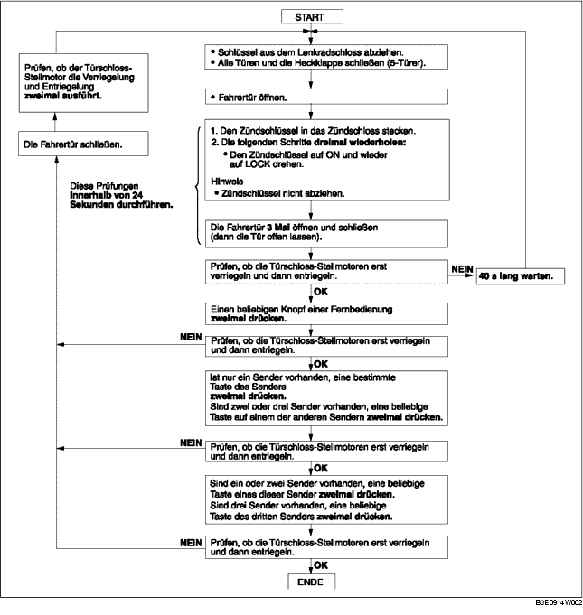

KENNUNGCODE DER FERNBEDIENUNG REGISTRIEREN
B3E091467543W03
-
Hinweis
-
• Bei der Programmierung des Kenncodes in das Steuergerät prüfen, ob kein anderer Sender in unmittelbarer Nähe betätigt wird.
-
• Nach der Programmierung des Kenncodes den Schlüssel aus dem Lenkradschloss abziehen und sicherstellen, dass sich alle Türen bei Verwendung des Senders ordnungsgemäß schließen/öffnen lassen.
